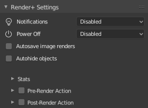
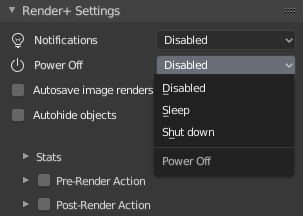
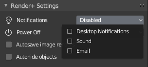
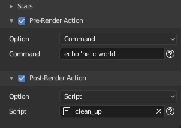

General Settings

Auto save Images
Let’s you save image renders automatically. It will use whatever settings you have set in the output panel in render settings.
This setting will also affect OpenGL renders when you render a still image. OpenGL Animations will always be auto-saved.
If the overwrite option is disabled new files will include a numbered suffix (“#1“,”#2”, etc.)
Autohide Objects
Objects in Blender can be hidden in the viewport and the final render independently. Sometimes this can be problematic: you hide something from the viewport and forget about it only to see it pop up in the middle of the final render.
The autohide setting hides objects in the render automatically if you have hidden them in the viewport. It will also hide objects in the viewport if you hid them from rendering.
Power Off

The power off options allow you to automatically shutdown or suspend (set to sleep) your computer when rendering finishes.
Windows will use Hibernation (or Hybrid Sleep) instead of regular sleep by default. If you want to use sleep you’ll have to turn hibernate off manually. Follow this guide to disable Hybrid Sleep in Windows 7.
This option is reset every time you open a blend file or render with it enabled, so you don’t accidentally turn off your PC.
Notifications

Desktop Notifications
Displays a popup message in your desktop when rendering is finished. Desktop notifications currently work only on Linux and OS X Mavericks (or newer).
Sound Notifications
Plays a sound once rendering is complete. You can set the file and volume in the addon Preferences
Email Notifications
Sends an email once rendering is finished. The email contains the name of the blend file, as well as total rendertime. If you rendered an animation, you will also get animation stats too (average and slowest/fastest frame).
The email SMTP server must be configured before you can use it. Head over to the addon Preferences section for more information.
Pre and Post render actions

Pre and post render actions are an advanced feature that runs arbitrary commands or python scripts before the render starts or after it finishes. They can be used to execute any command, like sending messages, uploading files via FTP, copying them to another folder, and more.
Click the check boxes to enable them. Once enabled a box with settings
will unfold. Use the option dropdown to select whether to run a
shell command or a script.
Command can be any command that you can run in a terminal or console
(or the prompt in Windows). Aliases like ‘~’ (in Linux/Mac OS X) are
available. Note that you need to use absolute paths in your commands
(eg. “c:user/me”, “/home/me/”).
Script will run any Python script in your Blender file. You can
write it the text editor or load it from an external file. Errors and
tracebacks will be printed to the terminal.
Render+ actions will run anything you give them. Please be careful, specially when deleting files.
Pre/Post Actions are disabled every time a blend file is opened for security reasons. Don’t forget to check and re-enable them!
Code Samples
Here’s some code samples to give you an idea of what can be done with pre/post actions. Copy these scripts inside a new text in the text editor, then set them up in the Render+ Settings panel.
Copy Rendered image to Dropbox folder
This script makes a copy of your Render in a Dropbox (or any other) folder. Run it as a post render action.
import shutil
import bpy
rendered = bpy.path.abspath(bpy.context.scene.render.filepath)
dropbox = '/path/to/your/dropbox'
try:
shutil.copy2(rendered, dropbox)
except PermissionError:
print('Not allowed to copy')
except FileNotFoundError:
print('File not found!')
Clean folder before rendering
This script removes every file inside the output folder. Double-check your output path and make sure the blend file is not inside the same folder. Run it as a pre-render action.
import os
import bpy
output = os.path.dirname(bpy.path.abspath(bpy.context.scene.render.filepath))
for f in os.listdir(output):
try:
os.remove(os.path.join(output, f))
except PermissionError:
print('Not allowed to delete ' + str(f))
except FileNotFoundError:
continue
Zip and mail
This script lets you zip the rendered file(s) and send them in an email. Watch out for file sizes. Run this as a post-render action.
Linux/Mac OS X
import bpy
from subprocess import call
# Settings --------------------------------------------------------------------------
# Change the settings to point to your files, mail address, etc.
# You need to have sendmail installed and configured to send the email.
files_to_zip = '/home/[USER]/my_project/render'
zip_to = '/home/[USER]/something/file.zip'
mail_address = 'my_mail@example.com'
mail_subject = 'Your Render is done!'
call("zip -r " + zip_to + " " + files_to_zip, shell=True)
rendertime = 'echo "Rendertime: ' + str(bpy.context.scene.renderplus.renderTime) + '"'
call(rendertime + ' | mail -s "' + mail_subject + '" ' + mail_address, shell=True)
Windows
import bpy
import smtplib
from subprocess import call
from email.mime.text import MIMEText
# Settings --------------------------------------------------------------------------
# Change the settings to point to your files, mail address, etc.
files_to_zip = 'c:\\Users\\me\\blenderProject'
zip_to = 'c:\\Users\\me\\/something/file.zip'
smtp_server = 'smtp.yourserver.com'
rendertime = 'Rendertime: ' + str(bpy.context.scene.renderplus.renderTime)
mail = MIMEText(rendertime)
mail['To'] = 'my_mail@example.com'
mail['Subject'] = 'Your Render is done!'
# Note that you need to have 7zip installed for the zipping command
call("7z.exe a -r " + zip_to + " " + files_to_zip, shell=True)
# To learn more about sending mails with Python check
# https://docs.python.org/3.4/library/email-examples.html
s = smtplib.SMTP(smtp_server)
s.sendmail('me@blender.org', mail['To'] , mail.as_string())
s.quit()